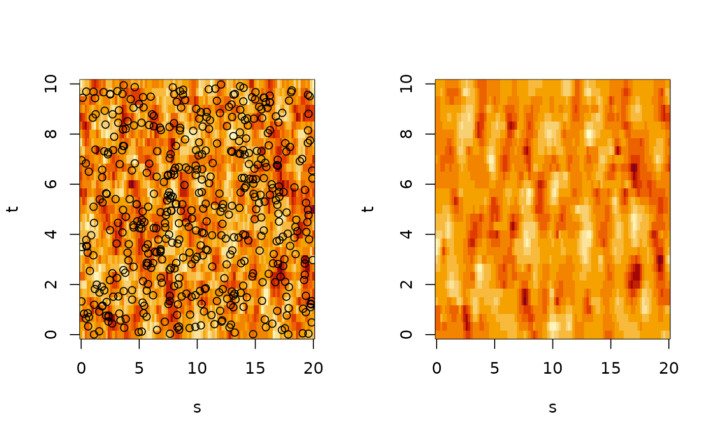
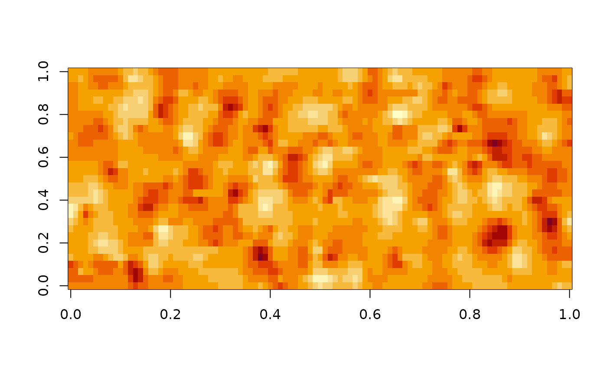
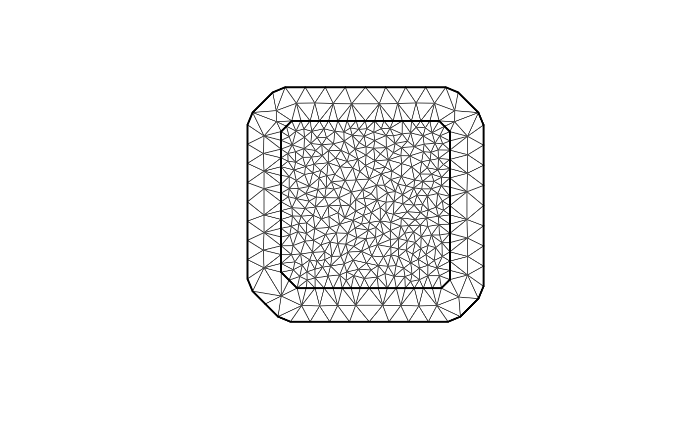
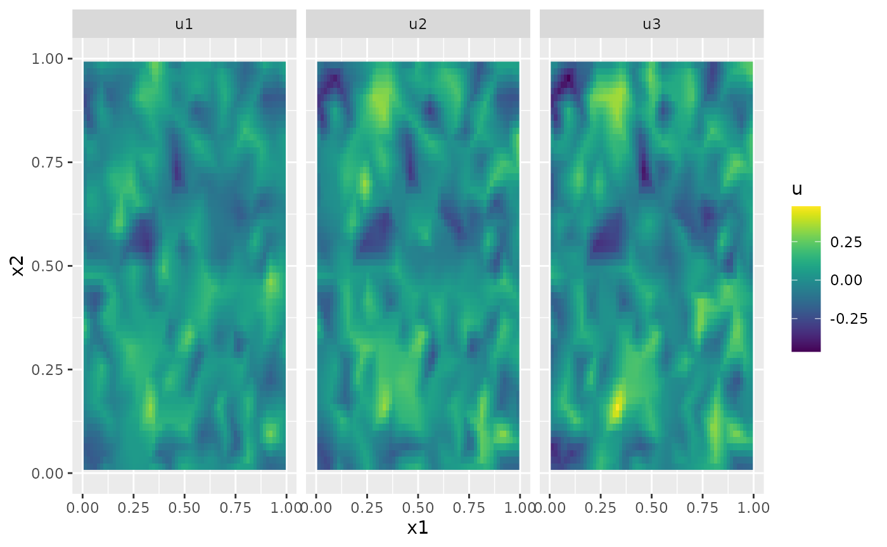

Spatio-temporal models
David Bolin and Alexandre B. Simas
Created: 2024-10-23. Last modified: 2024-10-24.
Source:vignettes/spacetime.Rmd
spacetime.RmdIntroduction
The rSPDE package implements the following
spatio-temporal model
where
is a temporal interval and
is a spatial domain which can be an interval, a bounded subset of
or a metric graph. Here
is a spatial range parameter,
is a drift parameter which is in
for spatial domains that are intervals or metric graphs, and in
for spatial domains which are bounded subsets of
.
Further,
is a
-Wiener
process with spatial covariance operator
,
where
is a variance parameter. Thus, the model has two smoothness parameters
and
which are assumed to be integers. The model is therefore a
generalization of the spatio-temporal models introduced in Lindgren et al. (2024), where the
generalization is to allow for drift and to allow for metric graphs as
spatial domains. The model is implemented using a finite element
discretization of the corresponding precision operator
in both space and time, similarly to
the discretization introduced in Lindgren et al. (2024).
Implementation details
The function spacetime.operators() can be used to define
the model. The function requires specifying the two smoothness
parameters, and the discretization points for the spatial and temporal
discretizations. The spatial discretization can be specified through a
mesh object from the fmesher package, as a graph from the
MetricGraph package, or as the mesh nodes for models on
intervals. The temporal discretization can be specified either by
specifying the mesh nodes or by providing a mesh object.
Assume that we want to define a model on the spatial interval and the temporal domain . We can then simply specify the mesh nodes as
We can now use spacetime.operators() to construct the
model
kappa <- 5
sigma <- 10
gamma <- 1/20
rho <- 1
alpha <- 1
beta <- 1
op <- spacetime.operators(space_loc = s, time_loc = t,
kappa = kappa, sigma = sigma, alpha = alpha,
beta = beta, rho = rho, gamma = gamma)The object op contains the matrices needed for
evaluating the model, and we have here initialized it by providing
values for all parameters.
We can simulate from the model using simulate():
u <- simulate(op)There is also built-in support for kriging prediction. To illustrate this, we use the simulation to create some noisy observations of the process. For this, we first construct the observation matrix linking the FEM basis functions to the locations where we want to simulate. We first randomly generate some observation locations and then construct the matrix.
n.obs <- 500
obs.loc <- data.frame(x = max(s)*runif(n.obs), t = max(t)*runif(n.obs))
A <- op$make_A(obs.loc$x, obs.loc$t)We now generate the observations as , where is Gaussian measurement noise.
Finally, we compute the kriging prediction of the process
at the locations in s based on these observations. To
specify which locations that should be predicted, the argument
Aprd is used. This argument should be an observation matrix
that links the mesh locations to the prediction locations.
Aprd <- op$make_A(rep(s, length(t)), rep(t, each = length(s)))
u.krig <- predict(op, A = A, Aprd = Aprd, Y = Y, sigma.e = sigma.e)The process simulation, and the kriging prediction are shown in the following figure.
opar <- par(mfrow=c(1,2))
image(s,t, matrix(as.vector(x), nrow = length(s), ncol = length(t)))
points(obs.loc$x, obs.loc$t)
image(s,t, matrix(u.krig$mean, nrow = length(s), ncol = length(t)))
par(opar)
Parameter estimation
To estimate the model parameters based on this data, we can use the
rspde_lme function. For this, we collect the data in a data
frame, that also contanis the spatial locations, and we fit the
model:
df <- data.frame(y = as.matrix(Y), x = obs.loc$x, t = obs.loc$t)
res <- rspde_lme(y ~ 1, loc = "x", loc_time = "t", data = df, model = op)
#> Warning in rspde_lme(y ~ 1, loc = "x", loc_time = "t", data = df, model = op):
#> optim method L-BFGS-B failed to provide a positive-definite Hessian. Another
#> optimization method was used.In the call, y~1 indicates that we also want to estimate
a mean value of the model, and the arguments loc and
loc_time provides the names of the spatial and temporal
coordinates in the data frame. Let us see a summary of the fitted
model:
summary(res)
#>
#> Latent model - Spatio-temporal with alpha = 1 , beta = 1
#>
#> Call:
#> rspde_lme(formula = y ~ 1, loc = "x", loc_time = "t", data = df,
#> model = op)
#>
#> Fixed effects:
#> Estimate Std.error z-value Pr(>|z|)
#> (Intercept) -0.0304 0.1126 -0.27 0.787
#>
#> Smoothness parameter:
#> alpha = 1
#> nu = (Matern parameterization)
#>
#> Random effects:
#> Estimate Std.error z-value
#> kappa 4.693513 0.391423 11.991
#> sigma 9.305321 0.823632 11.298
#> gamma 0.056854 0.009589 5.929
#> rho 0.394927 2.775596 0.142
#>
#> Measurement error:
#> Estimate Std.error z-value
#> std. dev 0.02298 0.02327 0.987
#> ---
#> Signif. codes: 0 '***' 0.001 '**' 0.01 '*' 0.05 '.' 0.1 ' ' 1
#>
#> Log-Likelihood: -630.8169
#> Number of function calls by 'optim' = 501
#> Optimization method used in 'optim' = Nelder-Mead
#>
#> Time used to: fit the model = 48.18978 secsLet us compare the estimated results with the true values:
results <- data.frame(kappa = c(kappa, res$coeff$random_effects[1]),
sigma = c(sigma, res$coeff$random_effects[2]),
gamma = c(gamma, res$coeff$random_effects[3]),
rho = c(rho, res$coeff$random_effects[4]),
sigma.e = c(sigma.e, res$coeff$measurement_error),
intercept = c(0, res$coeff$fixed_effects),
row.names = c("True", "Estimate"))
print(results)
#> kappa sigma gamma rho sigma.e intercept
#> True 5.000000 10.000000 0.0500000 1.0000000 0.01000000 0.00000000
#> Estimate 4.693513 9.305321 0.0568536 0.3949275 0.02297501 -0.03039585Finally, we can also do prediction based on the fitted model as
pred.data <- data.frame(x = rep(s,length(t)), t = rep(t,each=length(s)))
pred <- predict(res, newdata = pred.data, loc = "x", time = "t")
image(matrix(pred$mean, nrow = length(s), ncol = length(t)))
A spatial example
Let us now illustrate how to implement a spatial version. We start by
creating a region of interest and a spatial mesh using the
fmesher package:
library(fmesher)
n_loc <- 2000
loc_2d_mesh <- matrix(runif(n_loc * 2), n_loc, 2)
mesh_2d <- fm_mesh_2d(
loc = loc_2d_mesh,
cutoff = 0.05,
max.edge = c(0.1, 0.5)
)
plot(mesh_2d, main = "") We now proceed as previously by defining a temporal region and the model
t <- seq(from = 0, to = 10, length.out = 11)
kappa <- 30
sigma <- 10
gamma <- 1
rho <- c(0.1,0.1)
alpha <- 0
beta <- 2
op <- spacetime.operators(mesh_space = mesh_2d, time_loc = t,
kappa = kappa, sigma = sigma, alpha = alpha,
beta = beta, rho = rho, gamma = gamma)We can simulate from the model using simulate():
u <- simulate(op)Let us plot the simulation for a few time points
library(ggplot2)
library(viridis)
#> Loading required package: viridisLite
proj <- fm_evaluator(mesh_2d, dims = c(100, 100))
U <- matrix(u, nrow = mesh_2d$n, ncol = length(t))
field1 <- fm_evaluate(proj, field = as.vector(U[,2]))
field2 <- fm_evaluate(proj, field = as.vector(U[,3]))
field3 <- fm_evaluate(proj, field = as.vector(U[,4]))
field1.df <- data.frame(x1 = proj$lattice$loc[,1], x2 = proj$lattice$loc[,2],
u = as.vector(field1), type = "u1")
field2.df <- data.frame(x1 = proj$lattice$loc[,1], x2 = proj$lattice$loc[,2],
u = as.vector(field2), type = "u2")
field3.df <- data.frame(x1 = proj$lattice$loc[,1], x2 = proj$lattice$loc[,2],
u = as.vector(field3), type = "u3")
field.df <- rbind(field1.df, field2.df, field3.df)
ggplot(field.df) + aes(x = x1, y = x2, fill = u) + facet_wrap(~type) + geom_raster() + xlim(0,1) + ylim(0,1) + scale_fill_viridis()
#> Warning: Removed 18468 rows containing missing values or values outside the scale range
#> (`geom_raster()`).
We now generate the observations as , where is Gaussian measurement noise.
n.obs <- 500
obs.loc <- data.frame(x = runif(n.obs),y = runif(n.obs), t = max(t)*runif(n.obs))
A <- op$make_A(cbind(obs.loc$x,obs.loc$y), obs.loc$t)
sigma.e <- 0.01
Y <- as.vector(A%*%u + sigma.e*rnorm(n.obs))To estimate the model parameters based on this data, we can use the
rspde_lme function. For this, we collect the data in a data
frame, that also contanis the spatial locations, and we fit the
model:
df <- data.frame(Y = as.matrix(Y), x = obs.loc$x, y = obs.loc$y, t = obs.loc$t)
res <- rspde_lme(Y ~ 1, loc = c("x", "y"), loc_time = "t", data = df, model = op, parallel = TRUE)Let us see a summary of the fitted model:
summary(res)
#>
#> Latent model - Spatio-temporal with alpha = 0 , beta = 2
#>
#> Call:
#> rspde_lme(formula = Y ~ 1, loc = c("x", "y"), loc_time = "t",
#> data = df, model = op, parallel = TRUE)
#>
#> Fixed effects:
#> Estimate Std.error z-value Pr(>|z|)
#> (Intercept) 0.009662 0.008678 1.113 0.266
#>
#> Smoothness parameter:
#> alpha = 0
#> nu = (Matern parameterization)
#>
#> Random effects:
#> Estimate Std.error z-value
#> kappa 28.6345 3.4564 8.284
#> sigma 10.1818 1.5213 6.693
#> gamma 1.5361 0.4272 3.596
#>
#> Measurement error:
#> Estimate Std.error z-value
#> std. dev 0.010372 0.004315 2.403
#> ---
#> Signif. codes: 0 '***' 0.001 '**' 0.01 '*' 0.05 '.' 0.1 ' ' 1
#>
#> Log-Likelihood: 574.2634
#> Number of function calls by 'optim' = 39
#> Optimization method used in 'optim' = L-BFGS-B
#>
#> Time used to: fit the model = 3.69549 mins
#> set up the parallelization = 5.23077 secs